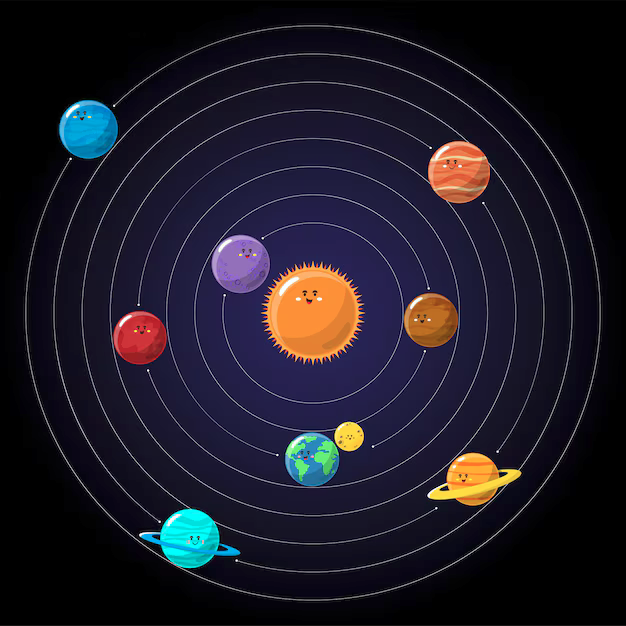
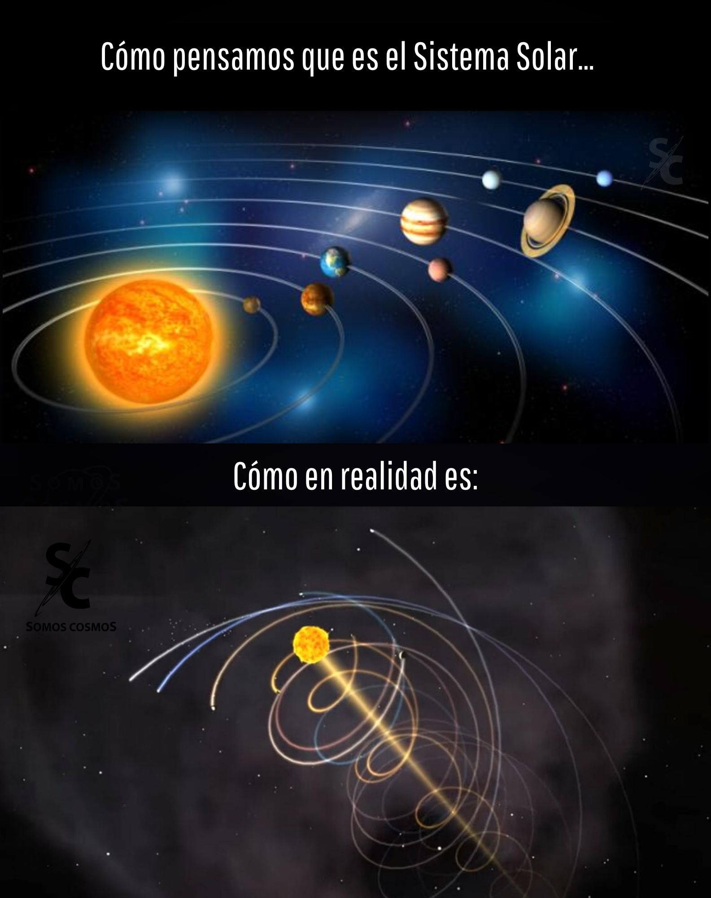
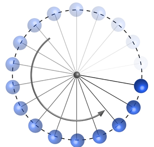
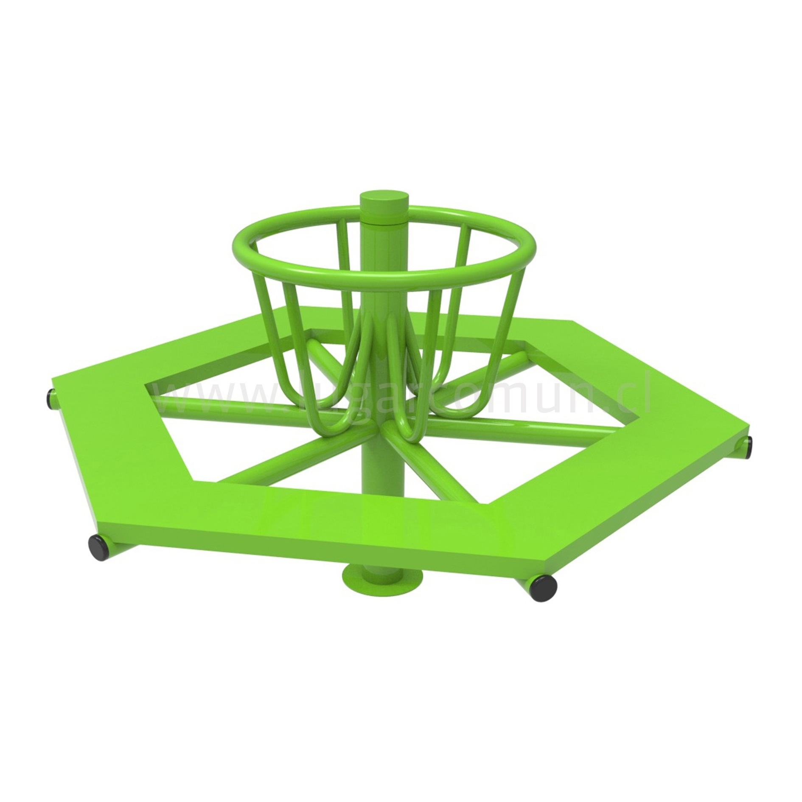
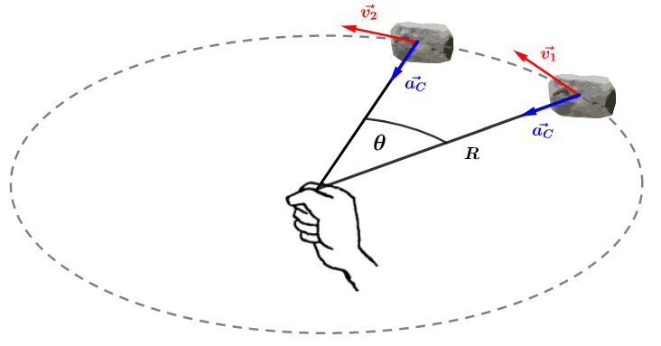
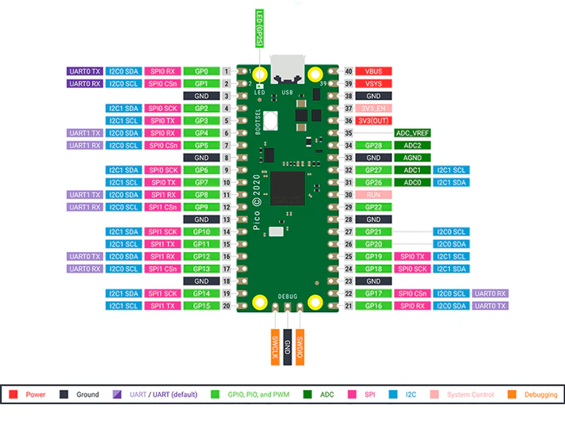
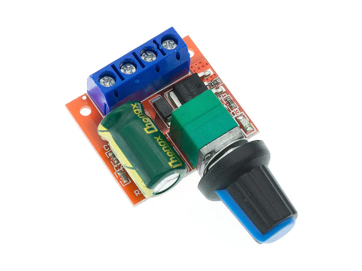
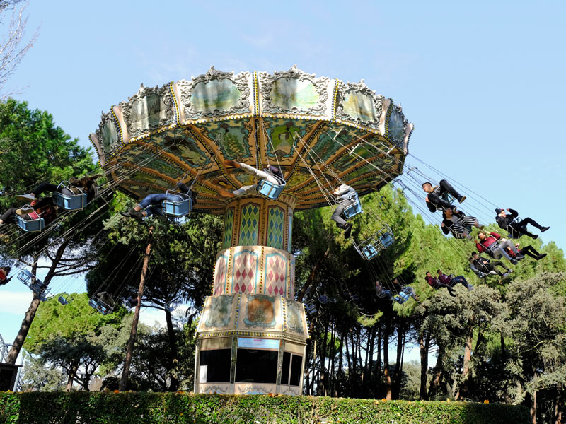

Movimiento Circular

Objetivo
Analizar el movimiento circular uniforme y sus características.
¿Qué es el MCU?
-
Cinemática
-
Movimientos rectilíneos
- M. Rectilíneo Uniforme
- M. Rectilíneo Uniformemente Acelerado
-
Movimientos circulares
- M. Circular Uniforme
- M. Circular Acelerado
-




Definiciones angulares
| Nombre | Descripción | Ecuación |
|---|---|---|
| Periodo | Tiempo en realizar una vuelta. Su unidad de medida es segundos [s]. |
$T = \frac{1}{f}$ |
| Frecuencia | Número de vueltas en un segundo. Su unidad de medida es segundos a la menos uno [s⁻¹] o Hertz [Hz]. |
$f = \frac{\text{n° de vueltas}}{\text{tiempo}}$ |
| Posición angular | Ángulo en el que se apunta el vector de posición. Su unidad de medida es radianes [rad]. |
$\theta$ |
| Velocidad angular | Es la variación del ángulo del centro barrido durante un intervalo de tiempo. Su dirección es perpendicular al plano que contiene la circunferencia y su sentido se rige por la regla de la mano derecha. Su unidad de medida es radianes por segundo [rad/s]. |
$$\omega = \frac{\Delta \theta}{\Delta t}$$
$$\omega = \frac{2\pi}{T}$$
$$\omega = 2\pi f$$
|

Algunos problemas para calentar
Un carrusel en rotación da una revolución en 4 s. Si un niño está en la parte más alta del carrusel y se encuentra a 1.2 m del centro.
- Dibuja la situación
- ¿Cuál es su periodo?
- ¿Cuál es su frecuencia?
- ¿Cuál es su posición angular?
- ¿Cuál es su velocidad angular?
La Tierra realiza una rotación completa sobre su eje aproximadamente cada 24 horas. Considera un punto en la superficie terrestre (por ejemplo, un estudiante en el ecuador).
- Dibuja la situación
- ¿Cuál es su periodo?
- ¿Cuál es su frecuencia?
- ¿Cuál es su posición angular después de 3 horas?
- ¿Cuál es su velocidad angular?
La Tierra realiza una rotación alrededor del sol en 365 días.
- Dibuja la situación
- ¿Cuál es su periodo?
- ¿Cuál es su frecuencia?
- ¿Cuál es su posición angular después de 1 día?
- ¿Cuál es su velocidad angular?
Definiciones lineales
| Nombre | Descripción | Ecuación |
|---|---|---|
| Posición | Ubicación del objeto en el espacio. | |
| Velocidad tangencial o lineal | Es la velocidad que tiene el objeto en un instante de tiempo. Su unidad de medida es metros por segundo [m/s]. En MRU era: $v=\frac{x}{t}$
|
$$v=\omega r$$
$$v=2\pi f\cdot r$$
$$v=\frac{2\pi r}{T}$$
|
| Aceleración centrípeta | Es la aceleración que tiene el objeto en un instante de tiempo. | $$a_c = \frac{v^2}{r}$$ $$a_c = \omega^2r$$ |
Otros problemas para calentar
Un carrusel en rotación da una revolución en 4 s. Si un niño está en la parte más alta del carrusel y se encuentra a 1.2 m del centro.
- Dibuja la situación
- ¿Cuál es su periodo?
- ¿Cuál es su frecuencia?
- ¿Cuál es su posición angular?
- ¿Cuál es su velocidad angular?
- ¿Cuál es su velocidad tangencial?
- ¿Cuál es su aceleración centrípeta?
La Tierra realiza una rotación completa sobre su eje aproximadamente cada 24 horas. Considera un punto en la superficie terrestre (por ejemplo, un estudiante en el ecuador).
- Dibuja la situación
- ¿Cuál es su periodo?
- ¿Cuál es su frecuencia?
- ¿Cuál es su posición angular después de 3 horas?
- ¿Cuál es su velocidad angular?
- ¿Cuál es su velocidad tangencial?
- ¿Cuál es su aceleración centrípeta?
La Tierra realiza una rotación alrededor del sol en 365 días.
- Dibuja la situación
- ¿Cuál es su periodo?
- ¿Cuál es su frecuencia?
- ¿Cuál es su posición angular después de 3 horas?
- ¿Cuál es su velocidad angular?
- ¿Cuál es su velocidad tangencial?
- ¿Cuál es su aceleración centrípeta?
Conclusiones
- ¿En qué casos utilizamos el modelo de MCU?
- ¿En qué se diferencia la aceleración de gravedad en la tierra respecto a la aceleración centrípeta?
- ¿Por qué no la consideramos en los laboratorios de la Unidad 0?
- ¿Cuál podría ser un ejemplo de MCU en la vida cotidiana?
- ¿Qué movimiento podría ser interesante analizar a través del MCU?
Fin de la clase
Movimiento Circular

Objetivo
Comprender el código básico de una raspberry pi pico en python para controlar la velocidad angular de un motor
¿Qué es una Raspberry Pi Pico?

from machine import Pin, PWM
from time import sleep
motor = PWM(Pin(15))
motor.freq(1000) # frecuencia en Hz
motor.duty_u16(32768) # valor entre 1 y 65535
sleep(3)
motor.duty_u16(0)
Conclusiones
- ¿En qué nos ayuda involucrar un microcontrolador para analizar un MCU?
- ¿Por qué duty_u16 es con valores de 0 a 65535 y no en rad/s?
- ¿Qué tipo de situaciones concretas podemos generar con esta herramienta?
Fin de la clase
Movimiento Circular

Objetivo
Programar un motor dc para que gire a una velocidad angular determinada
Recordando la clase anterior
Considera las manecilla del minutero de un reloj analógico, cuyo largo es de 15 cm
- Dibuja la situación
- ¿Cuál es su periodo?
- ¿Cuál es su frecuencia?
- ¿Cuál es su posición angular después de 20 minutos?
- ¿Cuál es su velocidad angular?
- ¿Cuál es su velocidad tangencial en la punta?
- ¿Cuál es su aceleración centrípeta en la punta?
Materiales
- Raspberry Pi Pico
- Motor DC
- Regulador de velocidad
- Protoboard
- Cables
- Fuente de alimentación
- 100% de la velocidad
- 80% de velocidad
- 60% de velocidad
- 40% de velocidad
- 20% de velocidad
- 0% de velocidad
Preparación del siguiente laboratorio
¿Cómo afecta la velocidad angular al ángulo de elevación de una cuerda con una masa en su extremo?